Gallery

 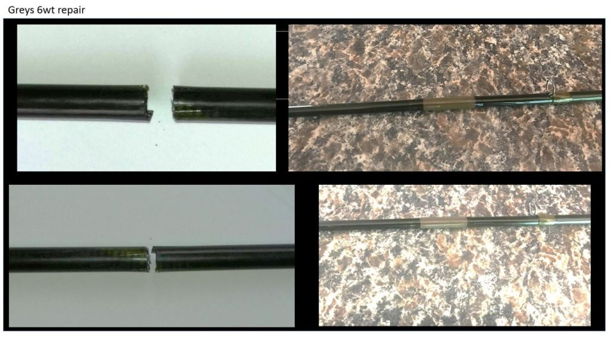
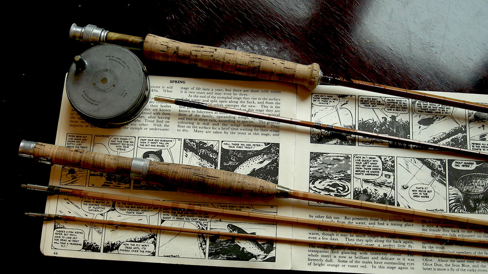
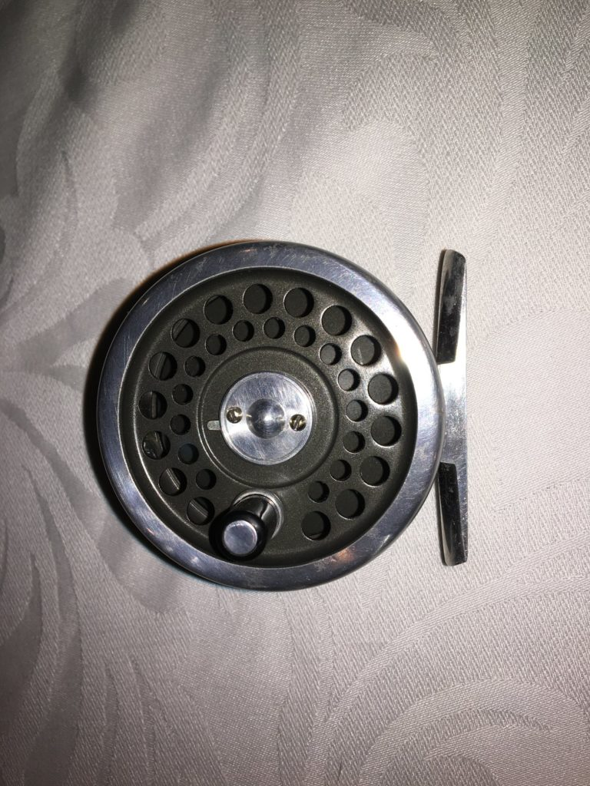
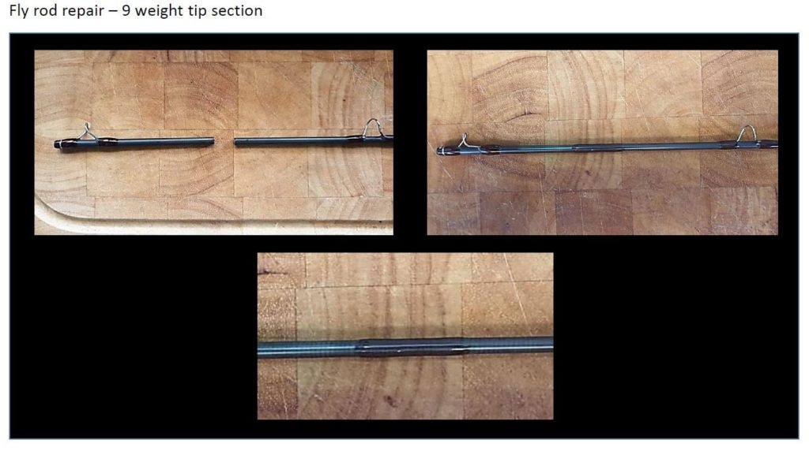
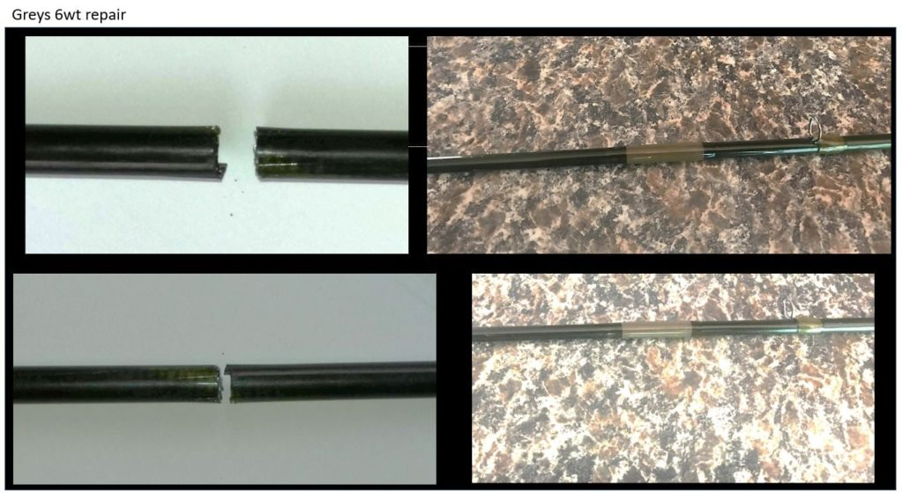
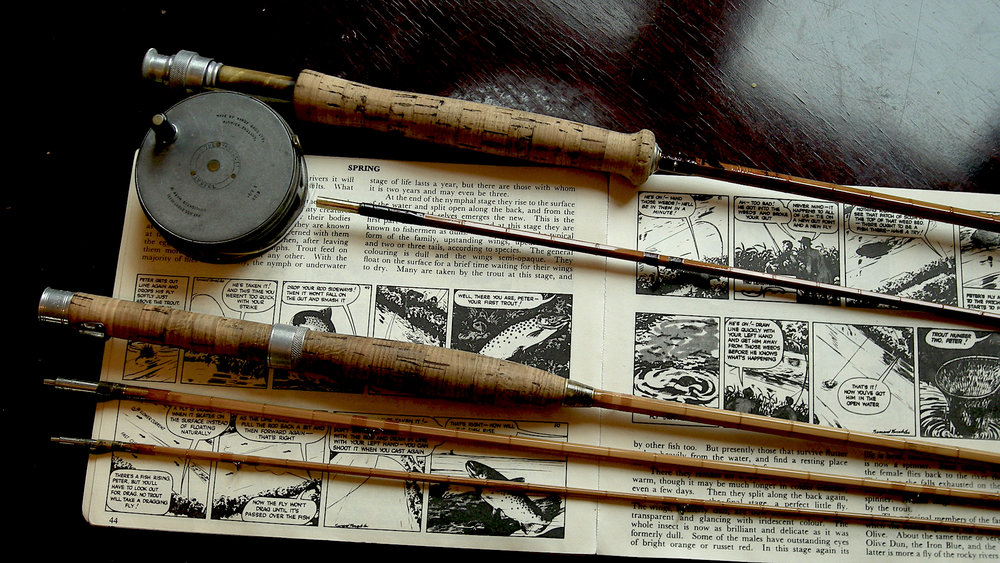
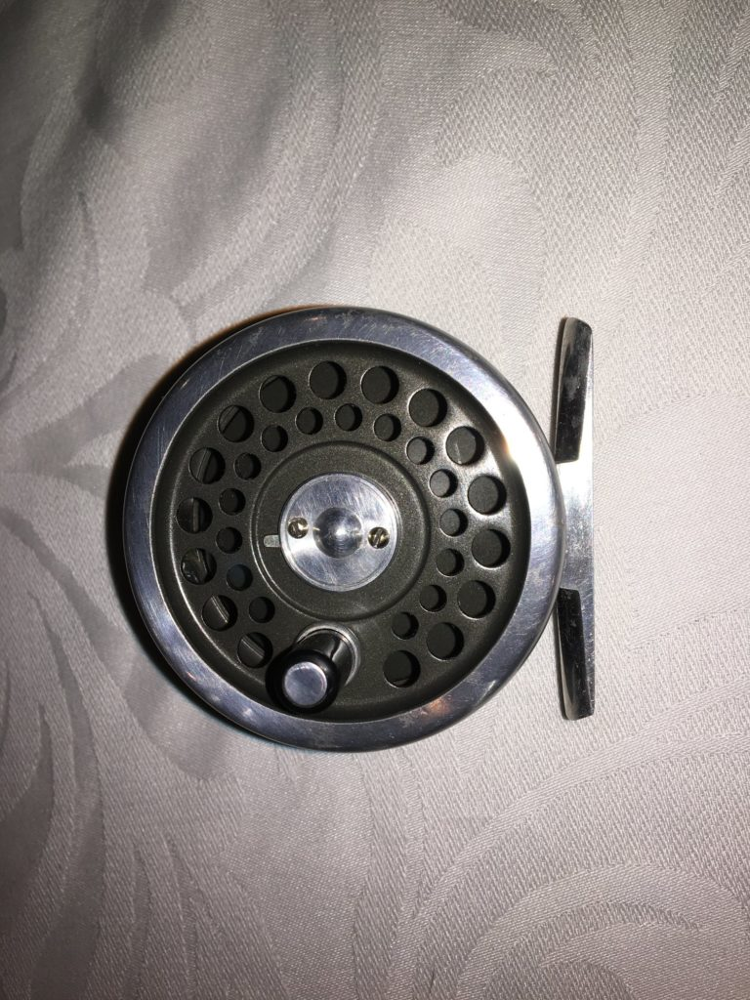
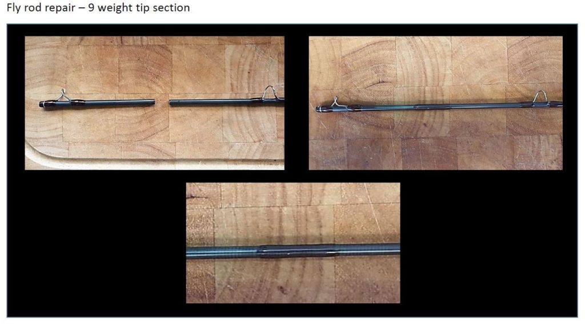

Precision craftsmanship in fly rod repair and restoration, tailored for anglers who care about tradition and performance.
Request a QuoteFrom snapped blanks to fractured tips, we expertly restore rods of all materials—Graphite, Bamboo, Split Cane, Fibreglass, even steel.
Broken or worn guides and tips replaced and rewrapped with precision for smooth casting performance.
Looking for a bespoke rod? We build fully custom rods tailored to your preferences—crafted to perform and impress.
Upgrade or refurbish your cork grip, reel seat, or handle for comfort, style, and improved control.
Keep your reel smooth and reliable with expert servicing and maintenance for all fly reel types.
Restore cherished or classic reels to working condition with full cleaning, tuning, and cosmetic revitalization.
Handcrafted wooden landing nets designed for both salt and freshwater use. Each piece is one of a kind.
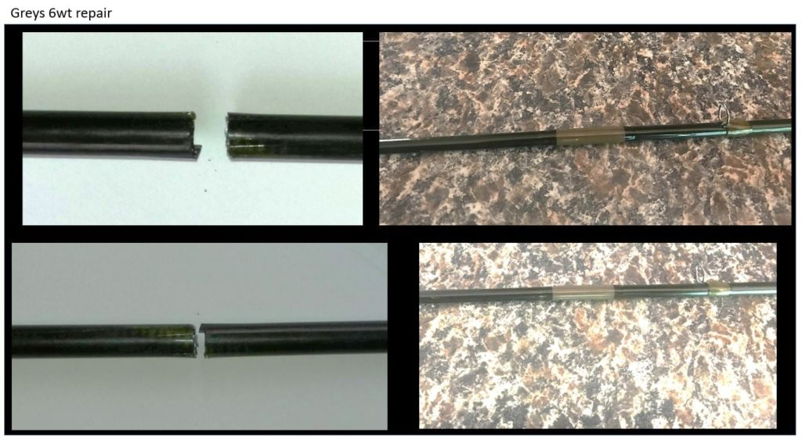
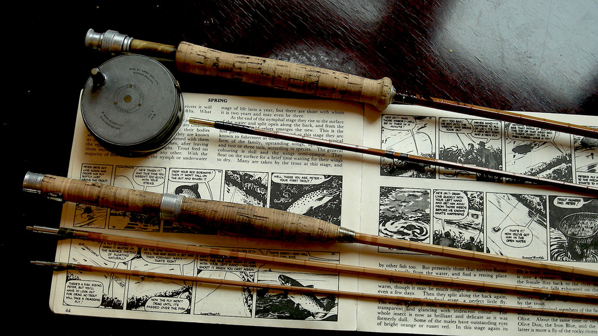
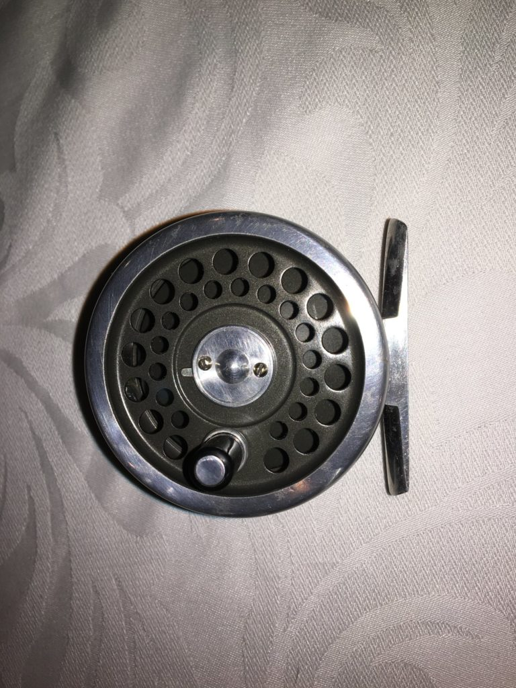
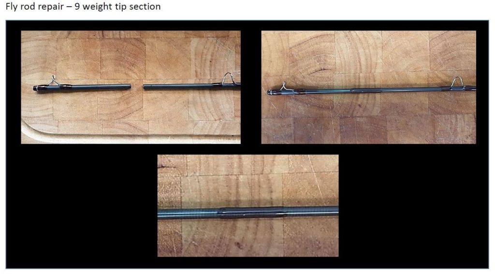
Andrew Strachan lives and breathes the soul of fishing. Whether casting with bait, lure, or fly, he seeks more than the catch. He seeks connection — with nature, with history, and with the quiet rhythm of the water. At his core, he is a devoted flyfisher whose love for the craft runs as deep as the rivers and streams he holds dear.
As the founder of Naiad Custom Nets and Rod Repairs, Andrew channels this passion into every
restoration. He brings broken rods back to life with a master’s touch, fusing skill with sentiment.
Every fracture repaired and every guide rewrapped is a respectful nod to the journey that rod has
taken — and the stories it still has left to tell.
What began as a hobby rooted in fishing and woodworking has become a lifelong pursuit of
excellence. Andrew handcrafts one-of-a-kind landing nets with care and precision, using techniques
that reflect both tradition and innovation. Each net is a functional work of art, tailored for those
unforgettable moments on the water.
Though his professional life is rooted in corporate IT, Andrew’s soul stays tethered to
craftsmanship. Each rod and each net carries a deeper meaning — a reflection of time, patience, and
purpose.